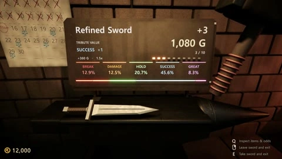
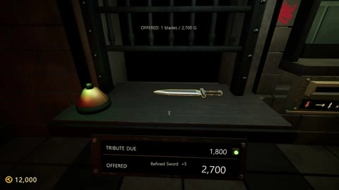
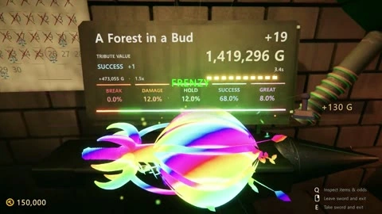

ForgeTax 游戏设计拆解
本文由 Codex 复用我总结的 Skill 和「游戏设计拆解」插件管线后，以 one-shot 方式生成。
今天的贡品已经够了，我还敲不敲？
作者与平台 GraveYardDev · Steam
分析版本 2026 年 11 月的 24 天契约，结合 11 月 17 日平衡与战斗更新
阅读对象 没玩过 ForgeTax 的读者、玩法与系统策划
证据口径 官方规则与开发日志、Steam 官方实机预告逐帧观察、明确标注的假设模型。本文含最后一天的屠龙玩法剧透。
目录
一、游戏概览和设计参照
一条龙把你关在铁匠铺里。它不要你交一把指定的剑，每天要的是够价的一堆剑。你把剑放上铁砧，敲一下可能涨价，也可能碎掉。敲完随时可以拿下来，放上贡台、交给遗物机器，或留在工坊。你可以用剑换到改变后续锻造结果的遗物。到 11 月版的最后一天，还要考虑用哪一把自己做的剑去见龙。规则依据见 S1 官方商店、S2 十一月大更新。
本文初判。 这款游戏最有张力的瞬间，通常发生在你已经握有一把能解决问题的剑之后。此时下一锤会改变两件事：剑本身的价值，以及你还能拿它做什么。只看强化概率，会漏掉交贡期限与库存的影响。只看每日贡额，会漏掉投资遗物和为末日留武器这两条路径。
| 设计参照 | 与 ForgeTax 的共同点 | 改变决策的差异 |
|---|---|---|
| 《Bladesong／铸剑吟》 | 同样把剑和订单放进工坊，制作过程会影响交付。 | 官方介绍强调自由塑形、模块化剑柄和委托要求。玩家可以问「形状怎样符合客户需求」。ForgeTax 主要追问「这把已经值钱的剑，要不要再承担一次损失风险」。外形在后者也会变，并与成长节点及剑系有关。S6 官方商店 |
| 《Luck be a Landlord》 | 都有周期性缴纳门槛，玩家在期限之间经营会影响随机产出的构筑。 | 转轮产生的是交租用的收益。ForgeTax 的单把剑既是当日可交的贡品，也是可消耗的投资品，还可以成为战斗武器。某一把剑碎了，具体会少掉哪些选项，要看它原先承担什么任务。S7 官方商店 |
这两个对照帮我们分辨两个问题。锻剑题材决定哪些反馈看起来合理，例如锤子敲下去、剑碎在铁砧上。定期缴款与可失去的库存决定玩家为什么会为同一锤犹豫。这篇主要拆第二个问题，并顺手检查第一人称的操作怎样让这种犹豫变得可见。
二、从一锤到二十四天
先记住这一条路线。 看今天还差多少贡品 → 选一把剑上砧 → 每锤后决定继续还是拿走 → 把剑分给贡台、遗物机器或库存 → 敲钟结算 → 带着剩下的剑和锻造条件进入下一天 → 最后安排战斗用剑。锻打和交付是两次性质不同的承诺。锻打让一把剑承担风险，敲钟会按交出去的剑处理今天的贡品。见 S1、S2。
| 阶段 | 玩家要决定什么 | 什么传到下一个阶段 |
|---|---|---|
| 新的一天 | 先准备最低交付，还是先做一笔投资 | 当日贡额、手中存货、已经拥有的遗物和可用资源共同限定开局选择 |
| 铁砧 | 用哪一把剑敲，敲完下一次以后还敲不敲 | 剑可能升值、受损、维持或碎掉，积累的入神进度和触发的效果会改变后续可走的路线 |
| 工坊分配 | 这把剑要上贡、换遗物、留作明天的底，还是作为战斗候选 | 用途之间竞争同一件实物，保留下来的剑仍具备后续分配价值 |
| 每日结算 | 贡台上的合计能否达成今天的要求 | 交出去的剑离开库存。能够继续时，没用掉的资源和构筑影响明天能承受多少风险 |
| 最后一日及其后 | 用什么满足最后的贡额，拿哪把剑进入龙战 | 剑价值与剑系能力进入战斗。官方公告还记录了结局后的继续游玩及重战方式 |
把状态分开看。 剑的成长留在单把剑上，所以两把同价的剑也可能有不同用处。遗物和特定商人道具改变的是之后的锻造条件，所以一把今天交出去的剑还能以另一种形式影响明天。每日贡额是外部要求，玩家要提前安排应对。开发者公告还区分了局内存档与跨局的成就、图鉴发现及解锁。11 月大更新要求新开一局，部分长期记录仍保存，旧局可以走 legacy 分支。见 S2。
一天的好坏不能只看你做出过多贵的剑。做出一把很贵的剑，随后让它碎掉，当晚贡台可能比没敲之前更空。反过来，一个没有冲出最高价的白天，如果已经交得起贡、留得下剑、还能腾出一把换遗物，下一天的决策反而更宽。这里的进度至少有三个维度：距结算还差多少、手里有哪些可用的剑、以后每一锤会受什么规则影响。
哪里连得紧。 当唯一一把值钱的剑掉下去就交不起贡，铁砧与当日结算是强耦合。把同一把剑放到已经留足贡品的局面，碎剑仍让你损失成本，但当天结算由备用库存接住。这时两个系统对「今天能过」的耦合变弱，对「明天投资多少」的影响仍可能很大。判断耦合强弱前，得先说清楚考察哪一个结果。
三、一锤前后，玩家看见什么
下表来自 Steam 商店当前的 73 秒实机预告，我按画面时间取样并核对了面板。时间以播放器开头为起点，可能有约 1 秒偏差。首段显示 24 天契约。预告有剪辑，中后段是独立样例。这是一份官方展示样本，本文尚未独立游玩正式版。 S1 商店播放器
| 视频时间 | 实机画面可复核的变化 | 站在玩家的位置，要决定什么 |
|---|---|---|
| 00:00–00:03 | 普通剑从 +0、320 G 到 +1、480 G，再到 +3、1,080 G。所示碎剑概率依次为 0.0%、1.8%、12.9%。+3 时名称变为 Refined Sword，剑身外形也变了。 | 已赚到的价值和下一锤的风险一起抬高。每次结果之后都要重新估算这把剑的用途。 |
| 00:04–00:08 | 画面切到贡台，显示 Day 1/24、当日应交 1,800 G。放上一把 +5 的剑后，贡台显示已放入价值 2,700 G，提示灯变绿。随后贡台上看不到原来的剑。 | 贡品充足时，可以结算。此时继续敲这把剑，会把已达标变成有风险的状态。注意预告剪掉了 +3 到 +5 之间的一段，无法核实那几锤具体出了什么。 |
| 00:10–00:12 | 遗物机器展示可选项，图标下方可见剑形标记及数字。画面还展示金币刷新价和剑形计数器。 | 选择之前先看看支付会让手头少什么。面板上有金币与剑两类计量，放弃的是不同预算。 |
| 00:28–00:36 | 枝条剑在砧上从 +15 往上强化。约 00:30，+17 的面板显示 36.8% 破坏率。约 00:32，FRENZY 和计时出现，此时所示破坏率为 0.0%。约 00:36 画面展示 +31 的世界树外形。 | 破坏率与剩余安全时间分别在回答不同问题。安全状态里可以考虑连续敲，看到安全窗口结束，就要重新判断。这个镜头展示的是成功案例，不能从它推算日常成功率。 |
| 00:44–00:48、01:00–01:08 | 贡台面板显示应交 4,000,000 G，已放入 4,000,122 G。后段在有火盆的战斗区域，第一人称持一把带紫色漩涡外观的武器面对龙。 | 末日要同时考虑交贡与备战。画面支持读出结算值，可观察到持剑进入战斗。两段经过剪辑，无法用外形相似证明同一件实体的库存去向，也读不出伤害公式。 |
首段能确认的是，游戏把等级、贡品价值、五栏结果概率和入神进度放在手离开铁砧之前就能读到的位置。下一节的算例用到了画面里的 1,800 G 和 2,700 G，也会额外加入一组人造数字，用来区分「这一锤平均值高」和「这一锤值得在今天敲」这两个判断。
屏幕上的信息有两种寿命。锤声、特效、当次结果文字在告诉你刚才发生了什么。剑价值、概率表、入神进度和可用保护次数在告诉你下一次还能做什么。前一种信息有助于归因，后一种决定你能不能马上重排计划。11 月 17 日的遮挡修正尤其能说明两者的关系。大剑挡到概率表或入神条时，开发者让重叠处变得半透明，保留场景中的剑，又给玩家找回做下一次判断所需的信息。见 S3 十一月十七日更新。
输入还有一个很窄的承诺边界。11 月 17 日公告写明，锤子落到剑上之前可以用右键取消，也支持长按左键锻造。短按更适合「敲完这一锤，读一下盘面」，长按适合已判断可以连续操作的阶段。在锤子落下前给撤手窗口，能降低误触成本。它也让设计师可以区分两种失败解释：玩家看懂风险后主动继续，或者玩家刚走神就因为输入缓冲多敲了一锤。这两种情况导致同样的碎剑，对应的修正完全不同。见 S3。



四、什么时候该停手
剑的标价，和它对你的用处，是两回事
假设已经有一把价值 2,700 G 的剑，今天要交 1,800 G。最简单的读法是：这把剑现在能让今天过关。但它的标价还没告诉你该不该交。如果另有两把剑合计达标，高价剑就有机会留作明天或留给后续用途。如果它是唯一能达标的剑，再敲一锤实际上是在拿今天的结算结果一起冒险。
我会在策划纸上先写两个数。贡额缺口等于应交价值减去已经准备好的其他剑的价值。手里的余量等于这把剑值多少钱，减去这个缺口。如果余量为正，继续敲的目的就得另找，例如为明天留更高的存货、跨过剑系能力门槛，或在已有最低交付方案之后做一轮投资。这个模型允许玩家为了长远选择承担风险，前提是先说得清现在冒险的目的。
下面是一道虚构算例。为了手算，测试只设「升值」「维持」「碎裂」三种结果。它们都使用假定的概率，正式版还会显示损伤和大成功等结果。设一把剑值 100，下一锤有 50% 到 180，30% 停在 100，20% 归零。它的期望价值为 120，但给出的建议会随贡额改变。
| 假想局面 | 现在停手 | 再敲一锤就结算 | 判断 |
|---|---|---|---|
| 还差 90，这把剑是唯一的可用资产 | 今日达标概率为 100% | 今日达标概率为 80% | 多出的 20 点期望剑价，换来了 20 个百分点的失守风险。若今日欠贡后果很重，我会停手。 |
| 还差 130，只剩这一把剑 | 今日达标概率为 0% | 今日达标概率为 50% | 同一锤成了有机会救急的动作。还需确认玩家是否有保住剑、接受短缺的策略。 |
| 贡品已足，这把剑可留到明天 | 当日必能达标，手中留 100 | 当日仍能达标，备用剑以 20% 概率碎掉 | 风险移到明天。把 100 留在手里是否重要，要看明日门槛、剩余库存和当下的保护。 |
这就是停手决策。玩家先看眼前的东西能解决哪个问题，再问如果失去它，下一个选择还剩几个。若只给玩家期望值，100 到 120 很好解释，却不能解释第一行和第二行为什么该做不同动作。
专业一点，设当前有其他贡品 B，当日贡额 Q，继续一锤可能进入多个结果，每种结果概率为 p，结算时该剑可贡献的价值为 v。若下一步直接结算，当日达标概率是所有满足 B 加 v 至少为 Q 的结果的概率之和。用这个思路可以分别画出「贡额过线率」「仍有可用剑的概率」和「剑价期望」。继续敲多次时，还要把等级、入神、保护次数和剩余库存当作状态，每锤重新计算。把首锤概率一直套到最后，会漏掉风险更新和触发效果。本文没有对正式版的签池公式作拟合。
同一把剑，两种贡额
入神让安全时间本身也值钱
你面前有一把剑，离入神只差一点。继续敲一下的回报，除了可能涨价，还有机会进入一小段不会碎剑的时间。此时玩家是在比较眼前的碎剑风险，与接下来几锤可获得的增长。约 00:32 的官方视频里同时出现倒计时、结果列和 0.0% 的破坏率。入神期间仍显示其他结果，所以「不会碎」与「每下都赚钱」是两个不同判断。 S1
这里有个可检验的分歧。入神可以让「快到安全期了」成为值得分别评估的路线，也可能让「一定要敲进入神」压过所有普通敲击。前一种情况，玩家会在低库存时停手，在有备用品时冲进窗口。后一种情况，玩家可以几乎无视贡品和剑，按固定节奏打满就好。两者都有可能在一个高光视频里看起来很精彩。要分辨它们，得记录一批日常局面里玩家在哪里收手，特别是离入神还有一步和还差几步的两组。开发者 10 月也明确提到，希望入神前的普通强化有自己的选择价值。 S4 开发日志
五、遗物为何要用剑买
回到工坊。你有三把剑，准备拿两把应付今天。遗物机器想要一把。你可以把第三把交给它，换明天的锻造条件，也可以留下来防止下一天起手太差。麻烦在于：有些遗物拿到后需要大量锻打才回本。若买完手里已经没有能敲的剑，你同时买到了更好的规则和更少的使用机会。开发者 10 月把「投资遗物后缺少用来锻打的剑」列为要改善的具体问题。 S1、S4
11 月版本还给幽灵商人添加本局持续生效的结果签商品。这里可以把「签」先理解成几类写着结果的纸票。一类票多了，抽签结果的比例可能改变，最终还得看概率板和当下生效的效果。官方更新里的 Fate-Carving Knife 能移除基础结果签。另一个有辨识度的例子是 11 月 17 日调整后的 Sealed Heart，入神中出现 Hold 时会延长这次入神。前者直接动抽签条件，后者改变原本一次维持结果随后能带来的时间。两种工具都能影响下一锤，但作用在不同环节。 S2、S3
| 改了什么 | 怎样传到后面 | 一般要满足什么条件 |
|---|---|---|
| 改签池 | 先改可出的结果比例，再影响每把剑能承担的风险 | 后面还有可敲的剑，而且改动的结果会影响当前目标 |
| 延长入神 | 维持结果仍可能不增加当前剑价，但多出来的安全时间允许继续行动 | 玩家已进入入神，还能在窗口里多完成有效敲击 |
| 提供防护 | 破坏原本可能让一把剑离开库存，防护可以挡住指定损失 | 防护可用、条件匹配，且它保住的剑能改变后续行动 |
| 剑换遗物 | 本日可提交的剑减少，未来锻造条件改变 | 当前或未来某天有足够的剑，用得出遗物收益 |
判断某个构筑有多强，得多问一句：它在什么时候能帮助你？一项防止碎剑的效果，如果有限次数，早期碰到高价值剑时可能很重要。等到玩家已经可以稳定进入安全状态，防护触发的机会可能变少。反过来，延长安全时间的效果在未成形时可能要等很久才触发。它们在新手的一天和熟练玩家的长局里，价值排序可以相反。
把过强构筑想成一条循环更容易查。更稳的敲击保住更多剑，更多留存带来更多投资空间，投资后又让锻造更稳。反馈也可能反着走：缺剑导致只好砸唯一的成品，碎掉后今天更缺，也更难拿出剑来改善后续规则。增加保护和恢复可以接住负向反馈，但如果每次碎掉都能毫无成本回到原点，停手的意义就会减弱。较好的设计门槛，是一次恢复能留下一条新路，仍让玩家付掉一部分拿来冒险的资源。这个判断要用实际测试核对。
构筑成型后，还需要新的问题
游戏通过提高贡额要求玩家继续增长。这样的做法在前中段挺有效，因为它会让昨天刚刚够用的安全方案今天遇到问题。构筑成熟之后则要小心：如果它已经能稳定一次达到贡额，单纯把数字再抬高，很可能只让玩家多做同一套动作。11 月更新里出现了别的用途，例如特定剑可参与工坊扩展，也可以考虑把战斗能力留给最后。任务从「再多挣一点」变成「哪一把可以花掉，哪一把值得留下」。 S2
这些新增用途还有时机要求。假设一种剑可以提供长期好处，但玩家看到它时只剩一天，回报自然变小。如果相关作用出现得过早，而达成条件只能靠极少数随机机会，玩家又容易把失败归给抽不到。可以通过观察拿到第一件关联遗物和第一次实际用出它的间隔来检验。两者离得很远时，应先检查可用剑和触发前置条件，再决定改价格、改供给，还是改说明。
六、为什么最后要留一把剑
初看最后要打龙，很像做完经营后送一场战斗。把工坊的库存带进去，才看到这一场战斗更早就开始影响玩家。以前，若只问能否完成契约，一把价值很高的剑通常是处理最后一个大贡额的工具。现在，还要留下准备拿进战斗的武器。同一把剑被同时点名了，但一旦上贡，就少了一把能带进战斗的剑。11 月公告明确提醒玩家在最后一次交贡前准备武器。 S2
可将最后一天理解成同时满足两个要求。贡台读的是一组剑的合计价值。战斗读的是武器价值与具体剑型的表现。+30 是官方描述的最终形态节点，11 月 17 日还提高了未取得主动能力的 +30 以下武器的普通攻击，并调整高价值武器的伤害缩放。这让两类终局剑值得分别观察：一把拥有好用的能力、同时能让你保留较多贡品，一把普通攻击够强、拿起来更容易用。公告足以说明两条路线存在，具体强度与最优选择要看战斗表现。 S2、S3
| 教学算例，数值与剑名均为假设 | 贡台 | 手里 | 要问的下一件事 |
|---|---|---|---|
| 今日要交 100，剑甲值 125，剑乙值 70，剑丙值 40 | 用甲交 125 | 留乙、丙 | 乙的能力和普通攻击，够不够对付龙？ |
| 同一个库存，把乙丙一起交 | 乙、丙合计 110 | 留甲 | 甲更贵，但玩家能不能在攻击机会里用好甲的能力？ |
| 若丙只有 20，又想保存甲 | 乙、丙合计 90 | 甲已预留 | 缺口只有 10，这时该动哪把贡品、能承受哪把碎掉？ |
最后一行说明，战斗规则可以把一个看似已经达标的库存重新变成缺口。最晚才告诉玩家要留剑，会让这项选择更像一次追缴。反过来，提前告诉玩家每个剑系的末端能力、提供能试剑的地方，玩家才可能在第五天、第十天就开始按目标留剑。在 11 月更新中，扩展工坊可提供训练假人，用于试伤害与能力。这提供了一个可比较的练习点，但要用实机确认玩家什么时候能解锁、看懂并真的试过。 S2
这里还要避开一个推理陷阱。看到预告里某把华丽的剑出现在战斗画面之前，不能由此断言它一定是那一局的最优武器。分析龙战要另外看四件事：能不能读出攻击前摇，能不能获得稳定的出手机会，在这个机会里各剑的动作怎样兑现，以及新手犯错后有多少时间重新站稳。官方的 11 月 17 日更新改了近身追踪、甩尾的可读性和攻击后的空档。对策划而言，保留剑有多少价值，需要战斗能把工坊的差异转成这些具体动作。 S3
七、版本变化如何检验设计判断
先确认我们谈的是哪一版
| 材料 | 核实到的版本变化 | 对拆解的影响 |
|---|---|---|
| 10 月 1 日 21 天更新 | 契约从 30 天缩短到 21 天。当时公告的最后一天基础贡额是 145,000 G。 | 这是早期版本的锚点。同月仍有后续调整。「21 天」本身不足以锁定贡额或强化曲线。S5 开发者更新稿 |
| 11 月 12 日大更新 | 24 天契约、+30 最终形态、去掉预热，加入龙战和工坊扩展。 | 当前拆解要把「铁砧 → 贡台」和「铁砧 → 龙战」同时考虑。炉子仍可出现在画面里，预热作为必经操作已被移除。S2 |
| 11 月 17 日后续更新 | 1–8 天贡额未调，从第 9 天起逐步提高，第 24 天基础贡额调到 4,000,000 G。旧进度当日保留原贡额，次日应用新数值。 | 做难度对照时要记住日数、基础贡额以及是否读了旧存档。预告末段显示的数字恰好能与这个节点交叉核对。S3 |
删去预热，可以用一个很简单的问题判断：拿剑到炉子旁边，玩家能不能在这一步做出会改变后果的选择？如果每一把剑都重复必做，去掉它能更快抵达停手决策。反过来，如果加热过程中原本有可比较的路径，删去就会损失决策。这里我能从公告确认的是旧入口被移除。要验证删去后是否感觉更好，可以让两组人从同样的工坊状态开始，测他们到第一次作出有理由的停手判断花了多久，再问他们觉得等待来自哪里。
开发者想解决什么，我们还能提出什么解释
| 观察或来源 | 意图与解释 | 怎样分辨 |
|---|---|---|
| 开发者提到有些局在构筑成形前就结束，成形之后又会重复。 S4 | 开发者明示。 早期希望失败后还有路走，后期希望成型仍保有成就感与选择。 | 同时看早期碎剑后还有几条可行路、玩家第一次成型发生在何时，以及后期的决策种类。只看通关率，很容易错过重复操作变多。 |
| 贡额从第 9 天起调高，早段保持原样。 S3 | 我的推断。 将额外压力放到通常已有些构筑资源的阶段，可能让前期有时间熟悉。另一种解释是主要为了纠正中后段贡额偏低。 | 对照两版中途已成形和未成形的局。若前者仍按相同动作通关、后者更多被淘汰，提高贡额主要在执行筛选。若两组都出现更多有理由的资源重分配，压力也增加了决策。 |
| 最后一日出现「交出高价剑」和「拿剑去打龙」的竞争。 S2 | 开发者明示想让人感受到剑的成长和能力。我的推断是它也能让同样昂贵的剑在库存里的作用分化。 | 在贡额和剑价类似的对局里，看玩家是否因剑系能力或试剑结果改换保留对象。若普遍只拿最高价剑，动作层的收益还没有反过来改变经营。 |
| 砧上保留概率表，在重叠处让大剑半透明。 S3 | 我的推断。 修正会改善正要做下一锤决定时的信息可读性。读得到也可能依然不会用。 | 分别测玩家能否报出下一锤破坏率、能否说出失去这把剑会不会欠贡，以及是否真的改变动作。三项分别测，才能看出问题出在显示、理解或操作。 |
一款反复更新的游戏里，公告能帮我们确认设计者说要处理什么、哪些规则已经写进版本。公告也不能替代玩家行为记录。开发者说收到了反馈，可以作为其修订依据的公开表述。本文没有那份原始遥测，因此没有拿它计算失败率、难度分布或者任何改动的实际效果。
八、怎样验证，看到什么要改判
我会先验证同样的剑、同样的一锤，玩家会不会因为贡品是否够而改选。这比先完整玩多少小时更容易给策划答案。评审取一个中段存档或一套可控的测试局面，固定剑系、当前价值、强化等级、面板破坏率、入神进度与遗物。做两份局，一份把其他贡品准备足，另一份让眼前这把剑刚好可以补足缺口。两份都允许玩家拿走剑或再锤一下。顺序交叉分配，先跑通流程，再根据试玩规模谨慎解释结果。
| 验证问题 | 固定和改变什么 | 先看哪个动作 | 哪种结果让我改判 |
|---|---|---|---|
| 贡额能否改变停手？ | 固定铁砧，改变预留贡品是否够。 | 玩家先看贡台还是先看铁砧，能否说清这把剑碎了之后的替代计划，最后是否继续。 | 如果理解两份局的缺口后仍普遍同选，当前贡额压力在这个测试区间不足以改变决策，或对应后果对玩家太轻。 |
| 入神有没有让每把剑都走同一路线？ | 固定贡额与剑价，分别给临近入神和距离较远的进度，再加一组有备用剑与无备用剑。 | 在出现第一次升值或损伤后，什么时候停，何时改用保护，是否愿意试备用剑。 | 如果不同局面几乎都冲到入神，入神前的对照空间可能太窄。若不同程度的缺口能改变动作，窗口有机会成为可选路线。 |
| 遗物能否帮人从坏局里回来？ | 固定碎掉一把关键剑之后的库存，比较能及时动用的保护或恢复与需要等更多触发的效果。 | 统计之后的两个关键选择与一个结算结果，记下是否还有替代剑可用。 | 如果恢复只是推迟同一次失败，先查恢复后的可用动作。若很快能重做且失去的选择全数恢复，再查失败还有没有成本。 |
| 龙战能改变工坊的留剑吗？ | 给两把战斗特点不同、贡额贡献相近的剑。一组先试剑，一组只读数值和说明。 | 试剑后是否换掉计划保留的剑，是否因此改配贡品，以及最终在战斗里实际使用何种能力。 | 如果试过也只按剑价排序，要查战斗能力是否提供了可感知的差别，以及出现差别的攻击机会是否足够。 |
记录按事件向前走会比只给一句「觉得紧张」更可用。每锤记四个时点：准备敲之前、看到结果、准备拿走或再敲、完成当日结算。记录需要包含可见的剑价、贡额缺口、是否还有别的剑、保护与入神状态。能控制随机序列时，可以把两个方案的首次锻打落在同类结果，再比较发生后的行动。控制不了就把实际结果入表，避免把某次幸运误认为界面更清楚。多人试验时另记对强化机制的熟悉程度，首轮和后续练习的数据分开看。
如果只要做一次小规模验证，我会挑第一行。它能最快查到游戏最重要的设计连接有没有实际进入玩家的判断。如果新手知道两种局面的贡额，却总等结果后才想库存，优先试着让贡额缺口在出锤前更容易查。若新手能预警，熟手在构筑成形后仍只重复同一套动作，下一步才轮到比较不同剑用途出现的时机，以及他们有没有提前为末日留剑。
我给这套设计的判断。 值得保住的做法是让玩家提前看到可兑现的结果，同时把是否继续交还给他。一锤前可以拿走剑，白天可以换一种分配，最后一天要决定哪些成果送走、哪些留在手里。这三个决策分别处理不同期限，却使用了同一种看得见的资产。可以迁移的原则是：先给玩家一个已经足够解决眼前问题的东西，再给他一个有明确收益和可追踪代价的继续选项。接着要验证，他知道自己押上了什么，也知道在哪个动作之后真的押出去了。这比增加一个更高的稀有度更能检验风险设计到底有没有生效。
九、证据索引
| 编号 | 原始出处与定位 | 文中支持的内容 | 可复核范围 |
|---|---|---|---|
| S1 | ForgeTax Steam 商店与 73 秒官方实机预告 | 游戏定位、停手、遗物机器、贡台。预告时间见第三节，尤其是 00:00–00:08、00:28–00:36、00:44–00:48 与 01:00–01:08。 | 官方剪辑样本。可以核对画面、面板与所展示的先后，不能推算完整对局的结果分布。 |
| S2 | 开发者十一月大更新，11 月 12 日 | 24 天、最终形态、去预热、构筑改动、龙战、练习区域、结局后玩法。 | 用于确认该公告发布时披露的规则与内容。数值有后续调整时以新公告为准。 |
| S3 | 开发者十一月小更新，11 月 17 日 | 中后期贡额变动、旧存档衔接、遗物效果、锻打取消、遮挡、龙战数值及反馈调校。 | 公告可确认改动及条件，效果仍需实机验证。 |
| S4 | 官方开发日志，10 月 11 日《Forge Improvements & New Content》 | 开发者公开描述的早期失败、成型后重复、入神前选择和剑系用途。 | 当时的设计目标，含开发中演示。上线行为与 S2/S3 互证。 |
| S5 | 10 月 1 日 21 天更新，SteamDB 保留的开发者原稿 | 给历史版本定点，说明为何旧攻略的天数与贡额会不同。 | 镜像记录，仅用于历史内容。 |
| S6 | Bladesong 官方商店 | 自由塑形、剑柄部件与客户需求。 | 设计参照，未做市场重叠或游玩效果测量。 |
| S7 | Luck be a Landlord 官方商店 | 转轮符号构筑与交租。 | 设计参照，用来对比收入和实物库存的不同角色。 |
本次使用的插件方法 全局玩法结构负责前后阶段的交接，游戏体验快拆负责实机时间线，机制与体验变化负责一锤的条件对照，系统还原与联动负责贡台、库存和遗物的传递，设计意图负责把开发者公开目标与仍需验证的解释对齐。正式版全局未独立实操。第三节的取样属于官方实机画面复核，第四节、第六节的数字模型及第八节验证方案均按其实际证据状态标出。